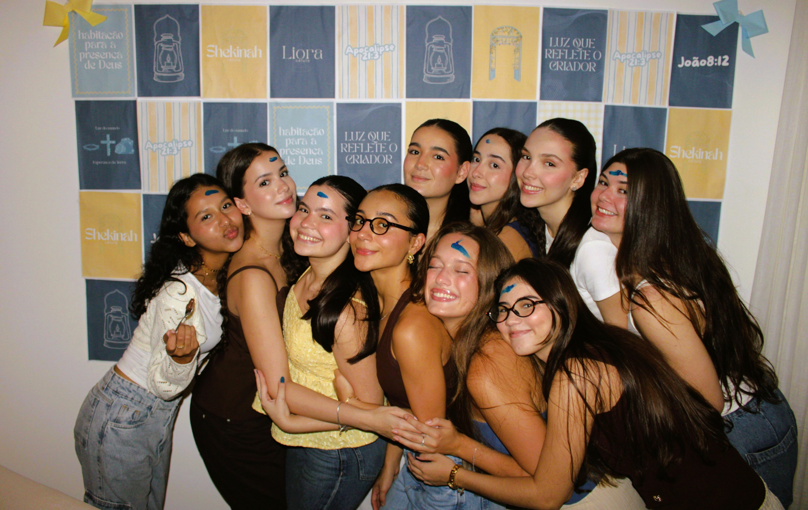
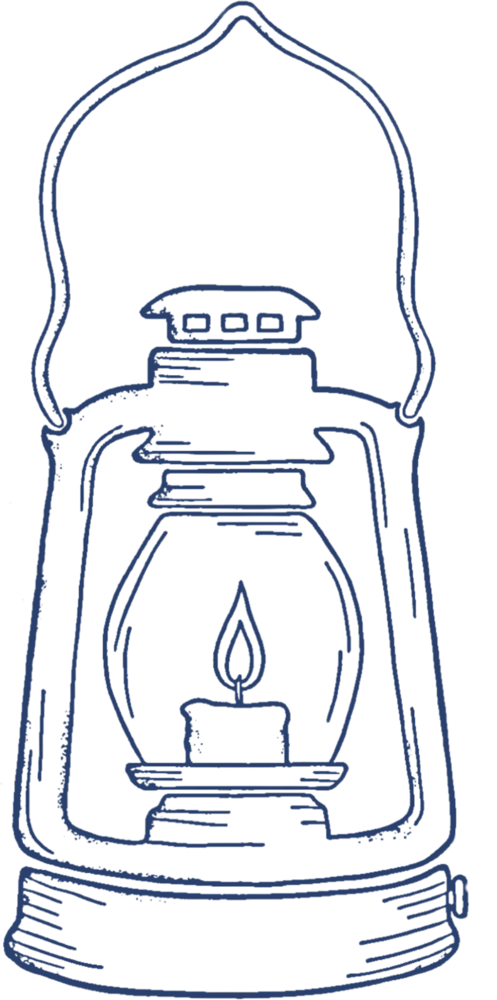

PertencimentoFéTransformação
Célula Liora
Luz que reflete o Criador.
Uma família para pertencer.
Frontstage
Um espaço para ser você, sem filtros.
Nossa essência
luz que reflete
o Criador.

A lamparina não cria a luz. Ela a carrega, a protege e a leva para onde está escuro.
É assim que enxergamos a Liora: jovens que recebem a luz de Cristo e a refletem.
-
#01
Pertencimento
Um lugar para chegar como está e ser acolhida como família.
-
#02
Fé
Crescer na Palavra e caminhar com Deus, juntas.
-
#03
Transformação
A luz de Cristo muda a gente, e a gente a reflete por onde passa.
Liderança
quem caminha com você
Mural vivo
Liora em vídeo
Nosso próximo encontro
Nos vemos às Quintas-feiras
Backstage
Para quem está chegando
nossa dinâmica
como acontece?
Como funciona um encontro?
Tem momento de oração, quebra-gelo pra todo mundo se soltar, louvor, devocional, estudo da Palavra e, aquele tempo de conversa, de comunhão e de comida.
Preciso conhecer alguém antes?
Nada disso! Chegou, já é da casa. Alguém da Liora vai te receber e te apresentar pras meninas.
Posso levar uma amiga?
Pode e deve! A gente ama gente nova. A Liora é feita de convites.
O que eu preciso levar?
Só você. Se tiver Bíblia, traz. Se não tiver, relaxa, a gente divide.
Como faço para participar?
Manda um oi no Instagram ou no WhatsApp que a gente te passa tudo.